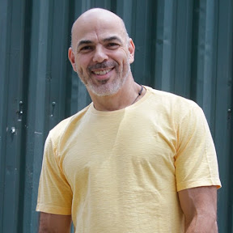

Batuara.net
Projeto social · Open Source
Sistema digital para a Casa de Caridade Caboclo Batuara: site público, calendário de eventos, conteúdo educativo, doações e dashboard administrativo.
.NET 8ReactPostgreSQLDocker
· Analista de Sistemas · Tech Lead
· Full Stack Developer
+35 anos transformando necessidades de negócio em software, do MS-DOS a era da IA.

Comecei em 1990 desenvolvendo em MS-DOS com Clipper, COBOL, C/C++ e Basic. Em 1996 migrei para Windows com Visual Basic e Delphi, e desde o lançamento do .NET em 2003 construí minha base em C#. Hoje concilio o papel de Analista de Sistemas com o de criador e mantenedor de produtos SaaS próprios.
Tenho como marca a liderança técnica natural, seja pelo relacionamento com equipes, pela facilidade de dominar novas tecnologias, seja pela visão de negócio que me permite atuar como Product Owner, entendendo a necessidade real por trás da tecnologia. Autodidata, resiliente e movido por resolução de problemas.
Mais de três décadas acumulando stack — do C/C++ aos frameworks web modernos.
De MVPs em desenvolvimento a produtos comerciais em produção — todos com arquitetura própria, do banco de dados ao deploy.
Sistema digital para a Casa de Caridade Caboclo Batuara: site público, calendário de eventos, conteúdo educativo, doações e dashboard administrativo.
Plataforma de cartões de visita digital. Atuo como Product Owner desde 2022 — projeto no ar, captando clientes reais e em evolução contínua.
SaaS multi-tenant de vitrine imobiliária, com agenda de visitas e integração WhatsApp via Evolution API. Backend .NET 10 + frontend React.
Sistema de gestão médica com suporte a modalidades DICOM (CT, MR, PT e mais), idempotência em operações críticas e conformidade LGPD.
Gestão de usuários com Clean Architecture + CQRS, desenvolvido como desafio técnico solicitado por empresa. Autenticação JWT, testes automatizados.
Website institucional estático desenvolvido sob demanda para cliente do setor de interiores, com deploy simples via Nginx.
SaaS multi-tenant para gestão de barbearias. Frontend e landing page comercial já em produção; API .NET 10 em construção.
Gestão e automação para salões de beleza e barbearias via WhatsApp: agenda inteligente, CRM, fidelidade e automações com Evolution API.
Plataforma SaaS para negócios pet: clínicas, petshops, hotéis e creches. Prontuário eletrônico, carteira de vacinas e agendamento via WhatsApp.
Micro SaaS para motoristas de aplicativo (Uber, 99): controle de quilometragem, lucro e desempenho por plataforma. Também laboratório de Clean Architecture e DDD.
Além de manter meus próprios projetos, contribuo com ferramentas open source de terceiros quando encontro um problema real.
Identifiquei e corrigi um bug real de agrupamento de ícones no GNOME Shell moderno: o WM_CLASS da janela era comparado em Latin-1 contra o StartupWMClass do .desktop lido em UTF-8, então nomes acentuados como "Carcará Code" nunca batiam — o app abria, mas com um ícone solto e genérico na dock, sem mesclar com o ícone fixado.
Além de projetar e codar cada sistema, sou eu quem opera a infraestrutura: containers, reverse proxy, bancos e deploy de múltiplos SaaS em paralelo, em ambiente local e na Oracle Cloud (Always Free Tier).
Cada produto roda em containers isolados (API, frontend, banco, cache) orquestrados via docker compose — perfis distintos para local, staging e produção.
Um Nginx central roteia múltiplos domínios/paths para os containers certos, permitindo vários SaaS ativos simultaneamente numa única VM Oracle Cloud Free Tier.
Pipelines de build, validação e deploy automático para OCI, com paridade entre o ambiente local (nginx-local) e o de produção.
Gestão e monitoramento de todos os containers (status, logs, portas, health checks) em um único painel, cobrindo todos os produtos ativos ao mesmo tempo.
Implantação de sistemas de terceiros, integrações (RM.Labore/TOTVS, VAPZA, Sensedia), automações em Python e consultas Oracle/Winthor.
Análise de negócios e Tech Lead .NET Core/C# com SQL Server em projetos de back-end e API REST.
Acompanhamento de projetos e equipes, Azure DevOps, Docker/Linux. Tech Lead em projeto C/C++ com ISO8583 para instituição financeira e no sistema SLC (MongoDB + C#) para banco digital.
Plataforma de cartões de visita digital (mobicard.com.br), no ar e captando clientes. Especificação funcional, testes e apresentação comercial.
Gestão administrativa e financeira de marca própria com cinco unidades em São Paulo; loja virtual em nopCommerce (.NET).
Manutenção do e-commerce e sistemas antifraude para redução de chargeback.
Líder técnico e desenvolvedor full stack do site de pacotes de viagens; promovido a coordenador de projetos.
Manutenção do e-commerce do Submarino; após a fusão B2W, expansão de atuação para a bandeira Shoptime.
Implantação do Microsoft CRM em clientes como Ingram Micro, com desenvolvimento de módulos customizados.
Desenvolvimento mobile com as primeiras versões do .NET para dispositivos Windows CE.
De programador a coordenador da equipe de desenvolvimento; sistemas em WindowsCE, POS e dispositivos embarcados em C/C++.
Gestão de toda a área de TI: migração de sistemas para Oracle, budget e infraestrutura de equipamentos.
Início de carreira em MS-DOS com Clipper, COBOL, Basic e Delphi. Destaque para a Blue Carts, onde por 3 anos desenvolvi sistemas de geração de tickets-refeição com segurança de papel-moeda e integração CMC7 em C/C++.
Aberto a novos projetos, parcerias técnicas e oportunidades como Tech Lead, Analista de Sistemas ou Desenvolvedor Sênior.